In this assignment, I implemented two major surface representations and several geometric operations on meshes.
In Section I, I implemented de Casteljau's algorithm to evaluate Bezier curves and Bezier surfaces.
In Section II, I implemented local remeshing operations (edge flip and edge split), area-weighted vertex normals for smooth shading, and Loop subdivision for mesh upsampling using the half-edge data structure.
This gave me a lot of insight as to the differences between these two styles of surface representation. It was very rewarding to play with the GUI and see the results visually, especially after struggling through pointer debugging in edge splits and subdivision!
Section I: Bezier Curves and Surfaces
Part 1: Bezier curves with 1D de Casteljau subdivision
De Casteljau's algorithm evaluates a Bezier curve using repeated linear interpolation between adjacent control points. Given control points \(p_0, p_1, ..., p_n\) and parameter \(t\), one subdivision step computes \[p_i'=(1-t)p_i+tp_(i+1)\] This produces a new set of \(n\) points. Repeating this process recursively reduces the number of points by one each level until only a single point remains. That final point lies on the Bezier curve at parameter \(t\).
This was implemented in BezierCurve::evaluateStep, which iterates over adjacent pairs of control points, linearly interpolates them with parameter \(t\), and returns the next level of intermediate points.
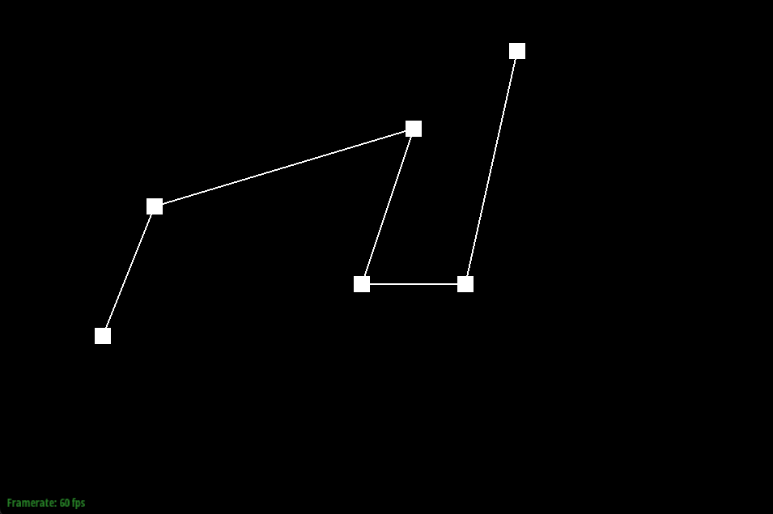
Step 1 Evaluation
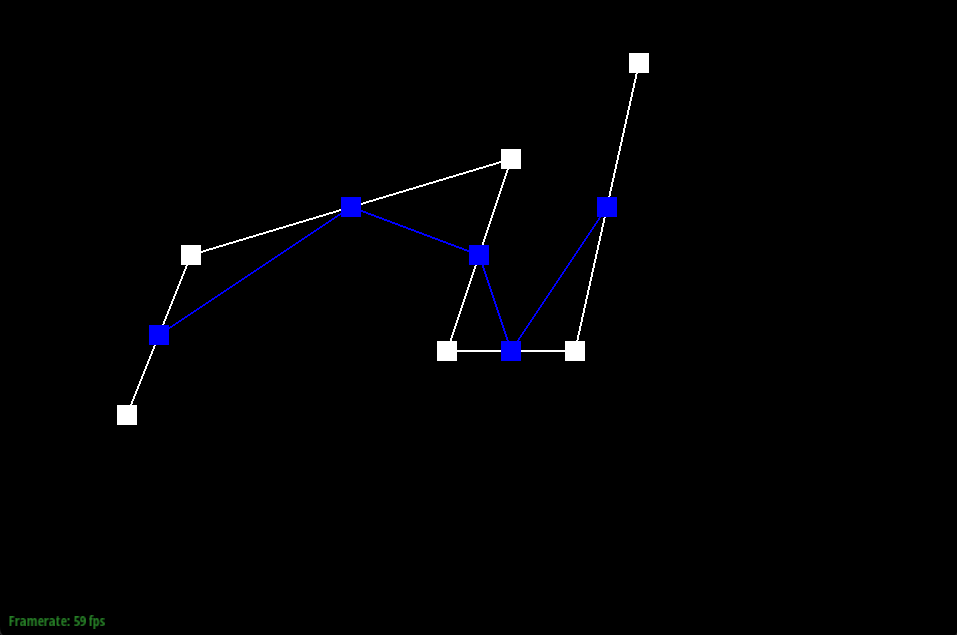
Step 2 Evaluation
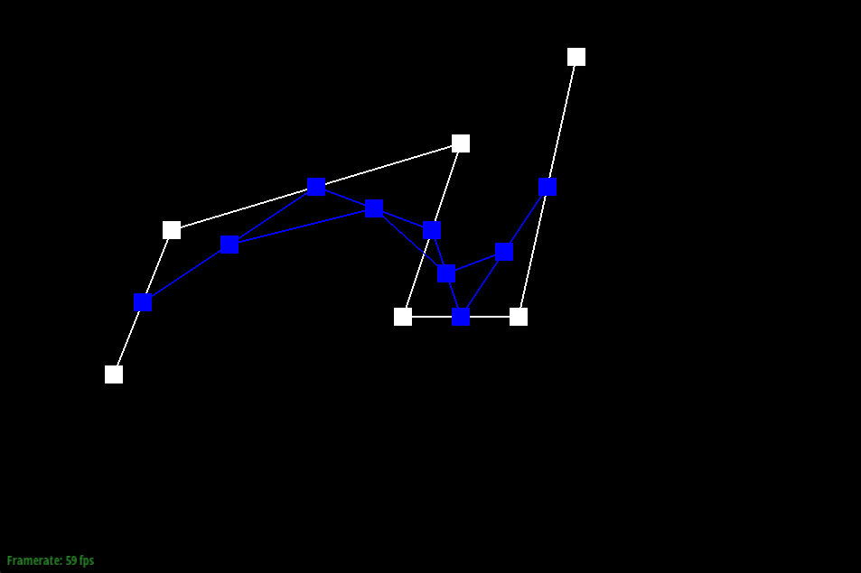
Step 3 Evaluation
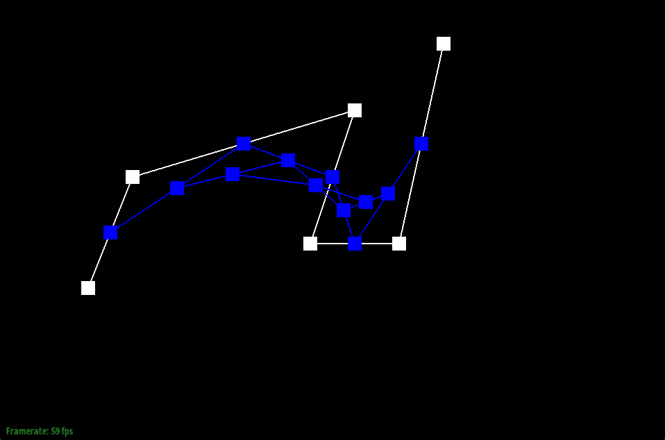
Step 4 Evaluation
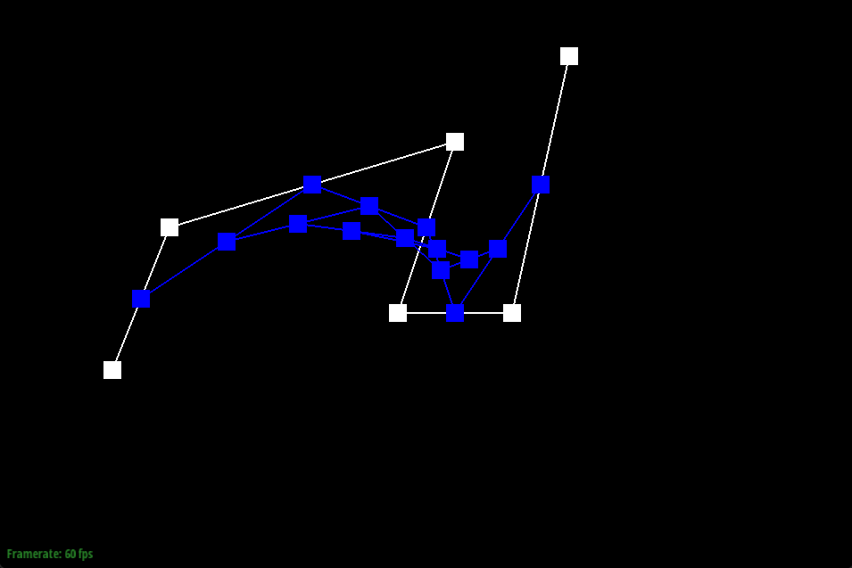
Step 5 Evaluation
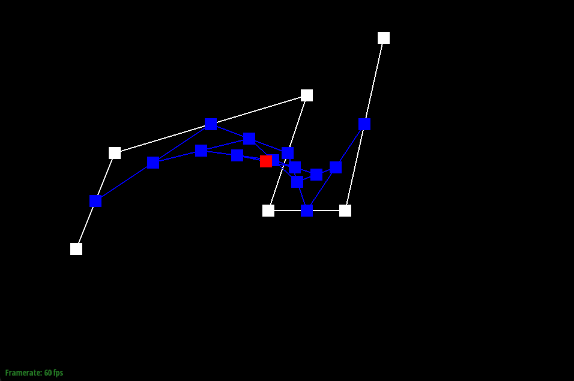
Step 6 Evaluation
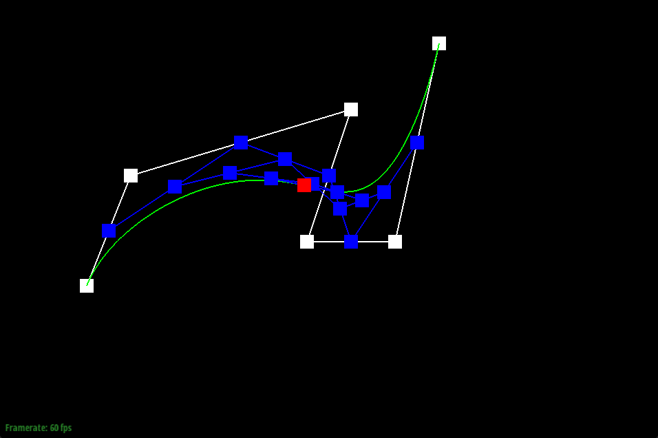
Curve shown
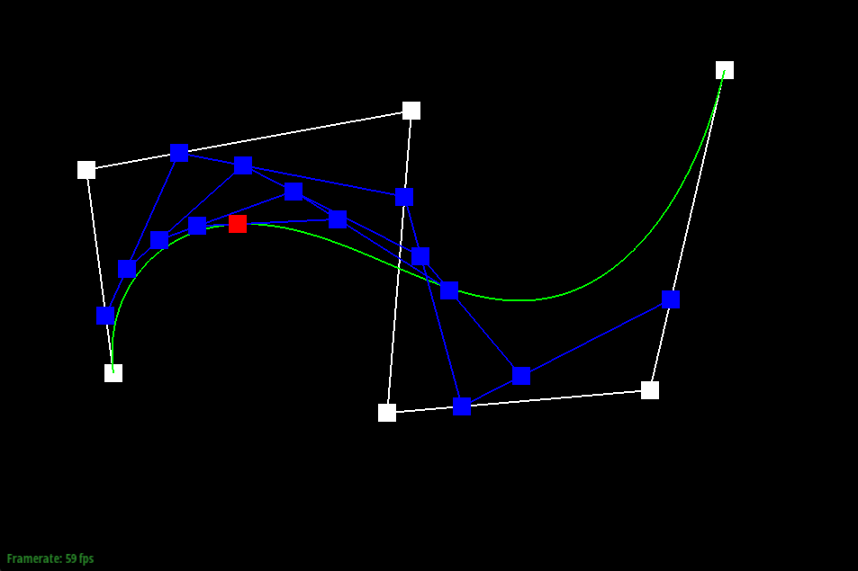
Modified control points and parameter
Part 2: Bezier surfaces with separable 1D de Casteljau
A Bezier surface is defined by an n x n grid of control points. To evaluate the surface at parameters (u, v), we treat each row of control points as a Bezier curve in parameter u, evaluate each row to obtain one point per row, treat those resulting points as a Bezier curve in parameter v, and evaluate that curve to obtain the final surface point. I implemented this in evaluateStep, evaluate1D, and evaluate, with similar logic to the 1D curve from part 1.
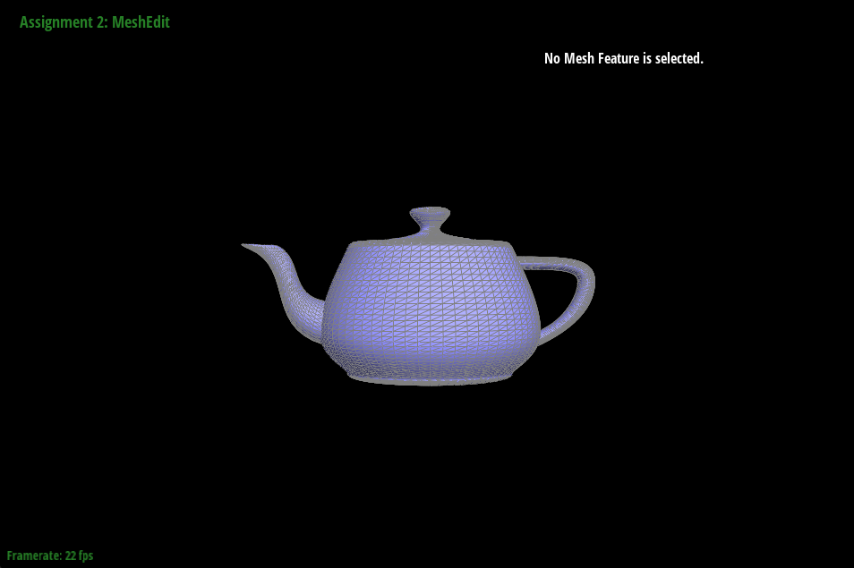
Teapot.bez
Section II: Triangle Meshes and Half-Edge Data Structure
Part 3: Area-weighted vertex normals
To compute smooth/Phong shading, we approximate a vertex normal by averaging the normals of incident triangles, weighted by their areas. For a triangle with vertices \(a\), \(b\), and \(c\), \(n = (p_1 - p_0) * (p_2 - p_0)\). This cross product produces a vector proportional to the triangle's area. I implemented this in Vertex::normal(), iterating around the vertex's ring, computing cross products for each interior face, and normalizing the result.
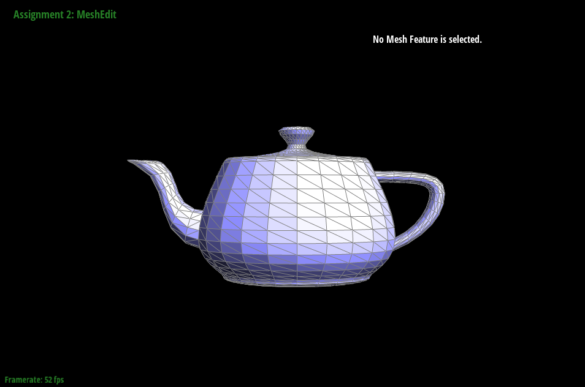
Flat Shading
Smooth/Phong Shading
Part 4: Edge flip
Given two adjacent triangles sharing an edge, flipping replaces the diagonal with the other diagonal. For example, triangles (a, b, c) and (c, b, d) would be transformed into triangles (a, d, c) and (a, b, d). In flipEdge(), I implemented it by collecting halfedges, vertices, and faces, and rewiring pointers to create the desired effect. I initially experienced crashes caused by incorrect next() cycles and forgetting to update halfedges, but was able to eventually verify each face had 3 halfedges and all cycles were closed!
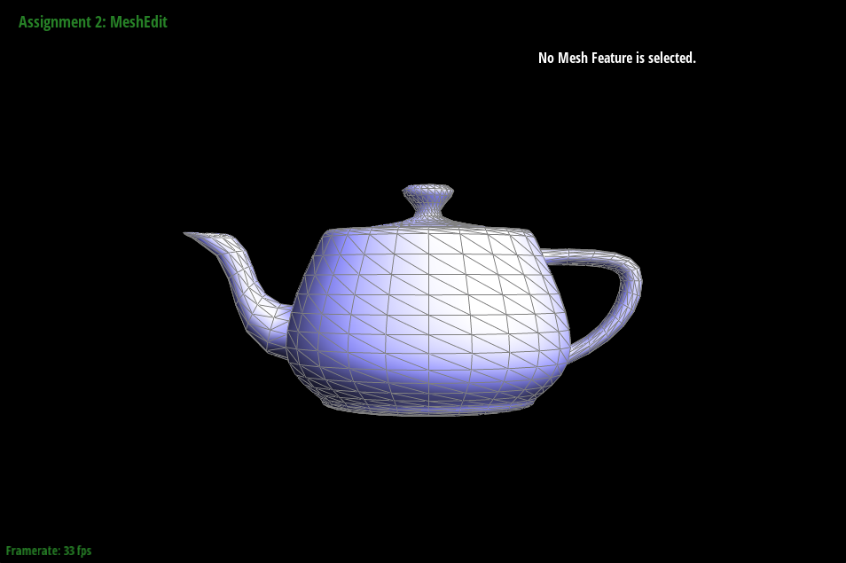
Normal Teapot
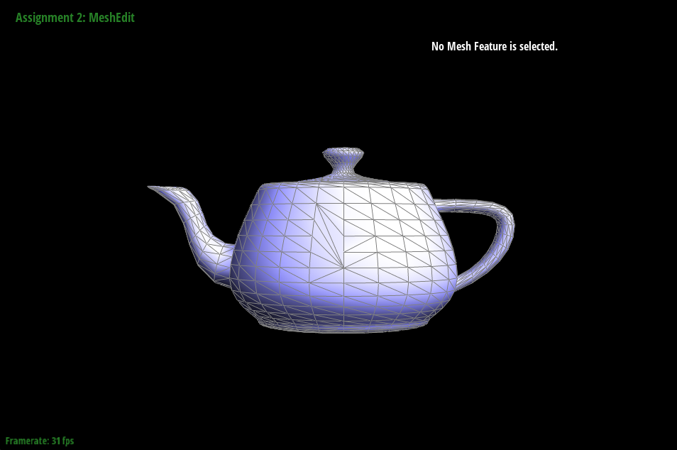
Flipped Teapot
Part 5: Edge split
Splitting an edge inserts midpoint vertices and divides triangles, adding new edges and faces. While this is similar to the last part on the logic, I had more debugging issues, like inconsistent face cycles, and halfedges pointing to incorrect places.
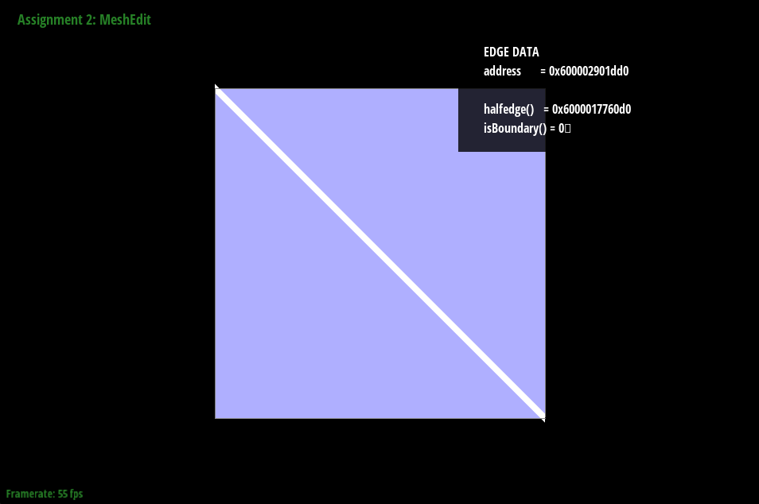
Normal Cube
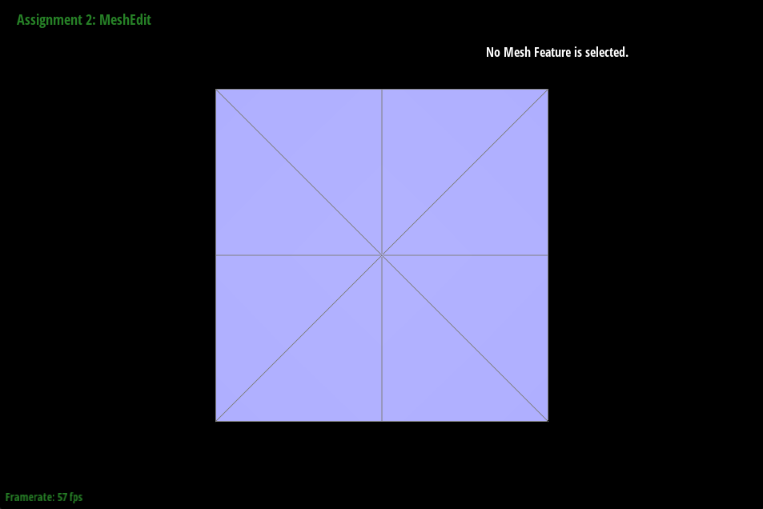
Edges Split
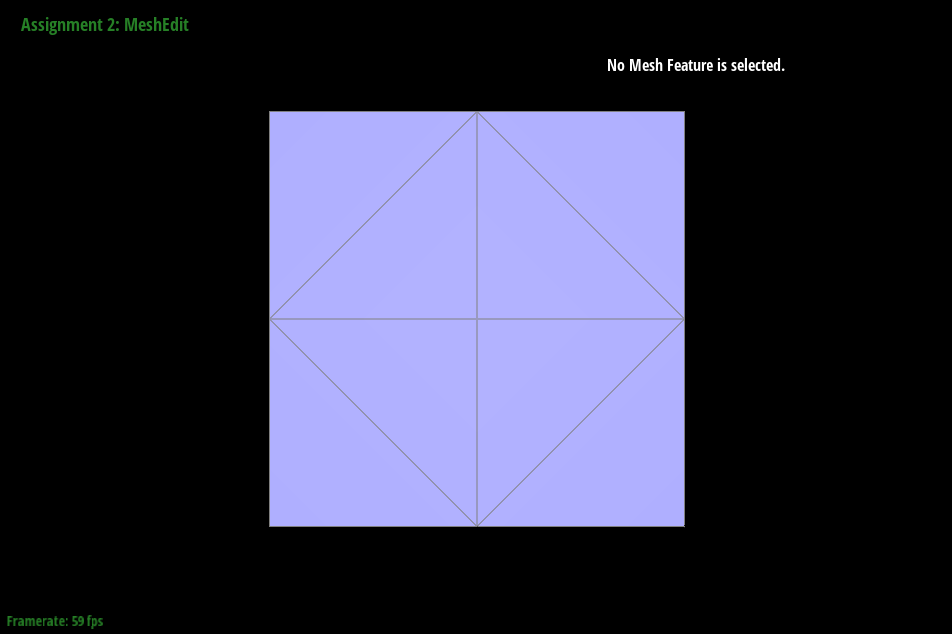
Split and Flipped
Part 6: Loop subdivision for mesh upsampling
Loop subdivision computes new positions, splits edges, flips edges, and commits the new positions. I followed the 5-step approach:
1. Compute new positions for old vertices
2. Compute edge midpoint posiitions
3. Split original edges
4. Flip new edges as needed
5. Commit positions
Over repeated subdivision, sharp corners became rounded as Loop subdivision approximates a smooth limit surface. Pre-splitting sharp edges before smoothing can reduce distortion by making it more regular. Flipping certain edges so face triangulation is consistent and symmetric ensures the cube continues to subdivide symmetrically.
Normal Cube